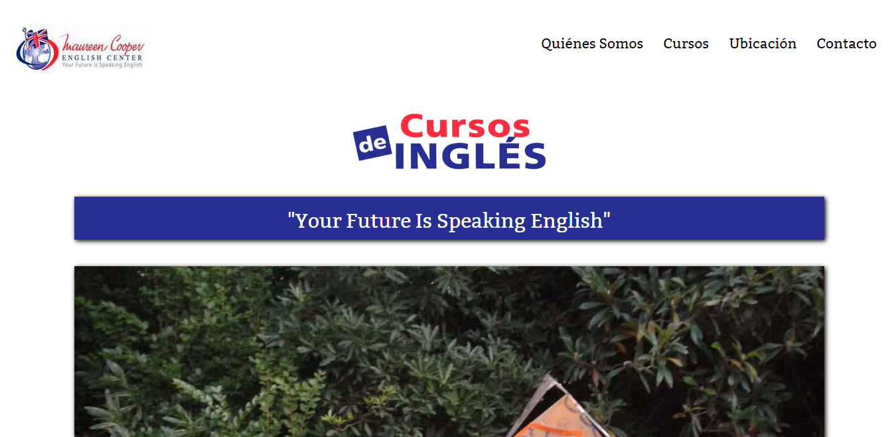
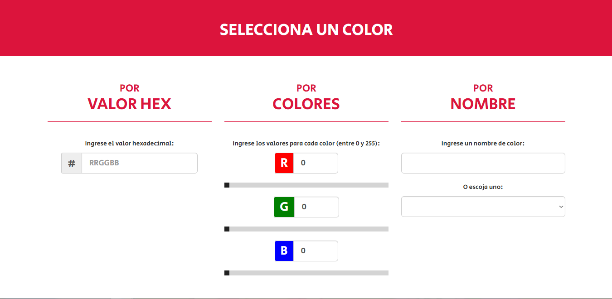

Página Web de Maureen Cooper English Center
Proyecto de remodelación completa de la página web del insituto de inglés Maureen Cooper English Center.
Selecciona un color
crismvp3200.github.io/selectcolor
Herramienta online para seleccionar un color.
Esta herramienta permite seleccionar un color por valor hexadecimal, valores de colores RGB, o nombre. Muy útil para desarrolladores web front-end.
